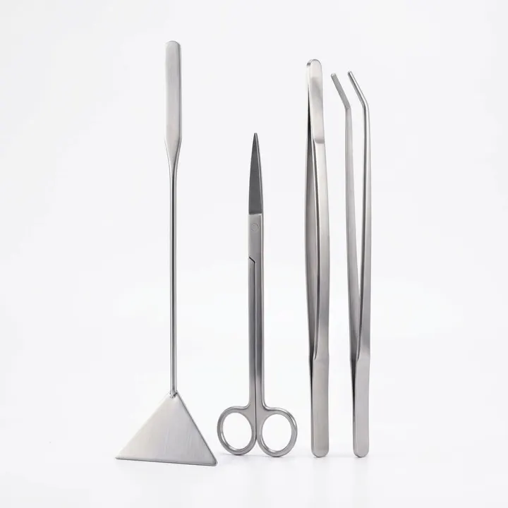
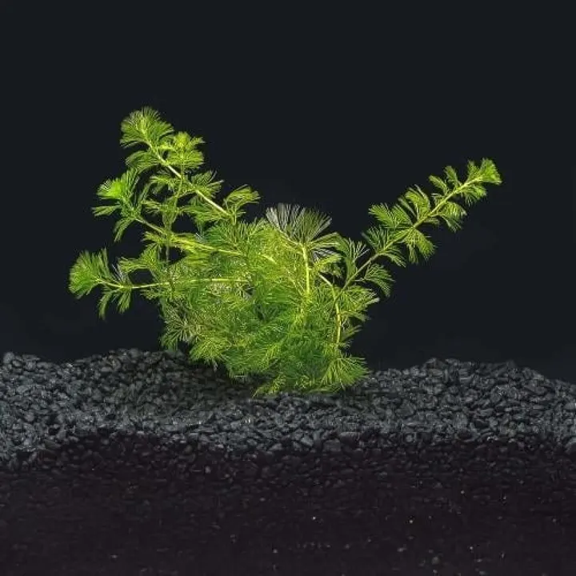

الصورة من مجموعة أكوا هافن01 / 01
النباتات وملحقاتهاعن هذه القطعة ↓
سيسيفلورا | Limnophila sessiliflora
سيسيفلورا | Limnophila sessiliflora؛ نبتة ساقية سريعة النمو بأوراق دقيقة وكثيفة، مناسبة لخلفية الحوض وللمبتدئين.
٤٥ ر.س
متاح في اللقطةسعر مرجعي للمعاينة. الطلب والدفع غير متاحين في هذه النسخة.
نظرة أقربعن هذه
عن هذه
القطعة.
الوصف والخيارات كما وردت في المجموعة المرجعية.
تفاصيل المنتج
سيسيفلورا | Limnophila sessiliflora — نبتة ساقية سريعة النمو بأوراق دقيقة وكثيفة، مناسبة لخلفية الحوض وللمبتدئين.
المعلومات الأساسية
- الاسم العلمي: Limnophila sessiliflora
- النوع: نبتة ساقية سريعة النمو
- الموقع المناسب: منتصف الحوض أو الخلفية
- الإضاءة: متوسطة
- ثاني أكسيد الكربون (CO₂): غير ضروري، لكنه يحسّن الكثافة
- درجة الحرارة: 20–28°C
- مستوى العناية: سهلة
الزراعة والعناية
تُزرع السيقان منفردة في التربة مع ترك مسافات بسيطة بينها، ويُقص الجزء العلوي عند زيادة الطول لإعادة الزراعة وتشجيع التفرع.
ملاحظة مهمة
النبات منتج حي؛ قد يختلف الحجم والشكل وكثافة الأوراق عن الصور حسب الدفعة وحالة النمو وقت تجهيز الطلب.